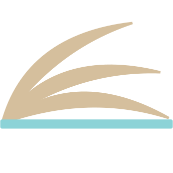

Directory
Browse the current issues
Each card opens the selected zine in the integrated viewer using a deployment-safe query parameter.
Loading zines…
No published zines are available yet.
A lightweight public browsing experience backed by normalized zine metadata and the integrated The ID viewer.

Directory
Each card opens the selected zine in the integrated viewer using a deployment-safe query parameter.